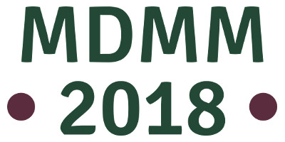

We are pleased to inform you that the eighth edition of the international conference Modeling and Design of Molecular Materials (MDMM 2018) will be held in Polanica-Zdrój (Poland) from June 24th till June 28th, 2018.

MDMM is a biannual conference devoted to presenting contemporary computational methods along with their applications in molecular modeling and molecular material design and related fields. Participation of experimentalists interested in application molecular modeling techniques is encouraged. Planned sessions include:
Refereed conference proceedings will be published in the Journal of Molecular Modeling (Springer) as it was the case with all previous MDMM meetings.
Early bird registration and payment deadline: March 15th, 2018; abstract submission deadline - May 15th, 2018.
More details about VIIIth MDMM and previous meetings are posted at the conference website and in the circular of the conference. We would be grateful if you could disseminate the information among your colleagues.
MDMM Organizing Committee